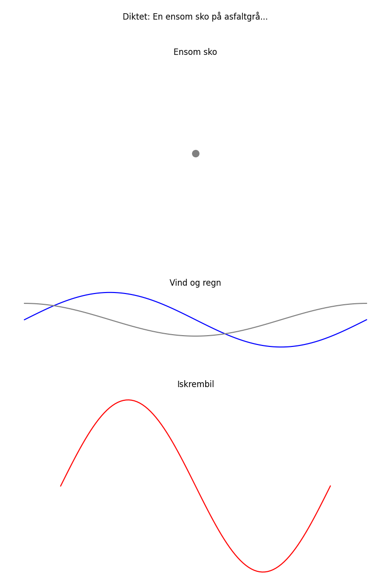

En ensom sko på asfaltgrå, venter på en fot å gå. Vinden blåser, regnet faller, mens en fjern iskrembil kaller.

import matplotlib.pyplot as plt
import numpy as np
# Dikt
dikt = """
En ensom sko på asfaltgrå,
venter på en fot å gå.
Vinden blåser, regnet faller,
mens en fjern iskrembil kaller.
"""
# Definer data for graf 1: Skoens posisjon
x_sko = [0]
y_sko = [0]
# Definer data for graf 2: Vinden og regnet
x_vind = np.linspace(0, 2 * np.pi, 100)
y_vind = np.sin(x_vind) * 0.5
x_regn = np.linspace(0, 2 * np.pi, 100)
y_regn = np.cos(x_regn) * 0.3
# Definer data for graf 3: Iskrembilen
x_iskrem = np.linspace(0, 2 * np.pi, 100)
y_iskrem = 2 * np.sin(x_iskrem) + 1
# Figure og akser
fig, axs = plt.subplots(3, 1, figsize=(8, 12))
# Graf 1: Skoen
axs[0].scatter(x_sko, y_sko, s=100, color='gray', label='Sko')
axs[0].set_title('Ensom sko')
axs[0].set_aspect('equal')
axs[0].axis('off')
# Graf 2: Vinden og regnet
axs[1].plot(x_vind, y_vind, color='blue', label='Vind')
axs[1].plot(x_regn, y_regn, color='gray', label='Regn')
axs[1].set_title('Vind og regn')
axs[1].set_aspect('equal')
axs[1].axis('off')
# Graf 3: Iskrembilen
axs[2].plot(x_iskrem, y_iskrem, color='red', label='Iskrembil')
axs[2].set_title('Iskrembil')
axs[2].set_aspect('equal')
axs[2].axis('off')
# Legg til tittel for hele figuren
fig.suptitle('Diktet: En ensom sko på asfaltgrå...')
# Juster layout
plt.tight_layout()
plt.subplots_adjust(top=0.9)
# Lagre figuren
plt.savefig(output_path)execution_ok=True fallback_used=False image_ok=True